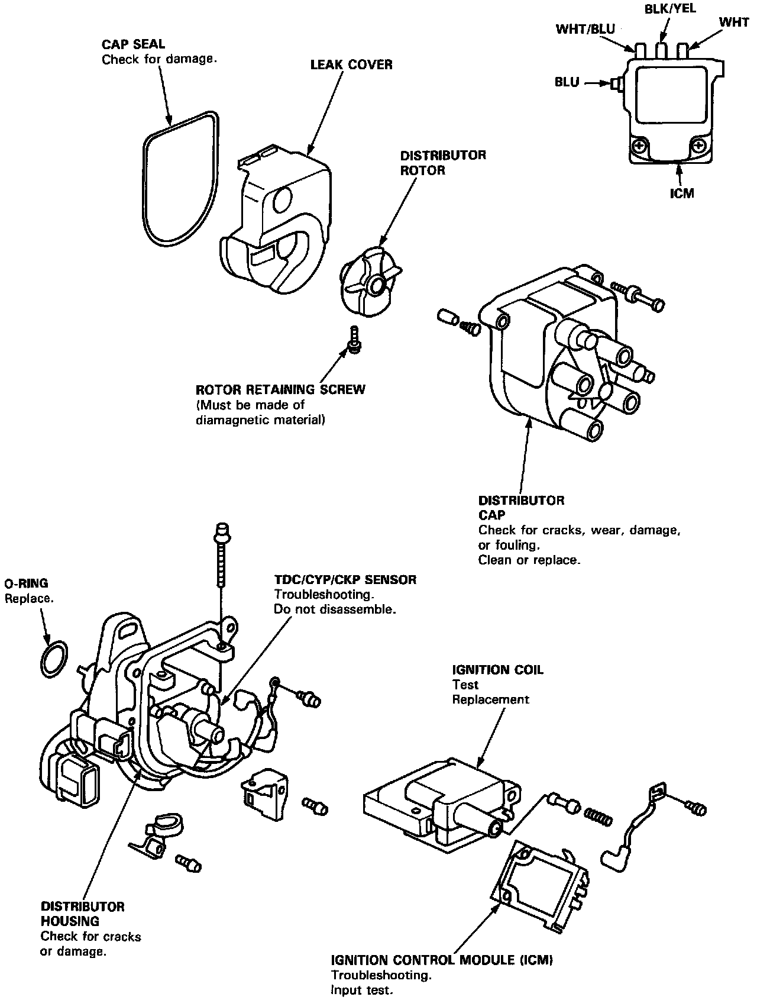

Ignition Control Module: Testing and Inspection
NOTE: If the Malfunction Indicator Lamp (MIL) blinks, see appropriate Diagnostic Trouble Code chart in Computers and Control Systems before testing the coil.- Perform an input test for the Ignition Control Module (ICM) after finishing the fundamental tests for the ignition system and the fuel and emissions systems.
- The tachometer should operate normally.
Distributor Components:

1. Remove the distributor cap, the distributor rotor, and the leak cover.
Ignition Control Module:

2. Disconnect the BLK/YEL, WHT/BLU, YEL/GRN, and BLU wires from the ICM.
3. Turn the ignition switch ON. Check for voltage between the BLK/YEL wire and body ground. There should be battery voltage.
- If there is no battery voltage, check the BLK/YEL wire between the ignition switch and the ICM.
- If there is battery voltage, go to step 4.
4. Turn the ignition switch ON. Check for voltage between the WHT/BLU wire and body ground. There should be battery voltage.
- If there is no battery voltage, check:
- Ignition coil.
- WHT/BLU wire between the ignition coil and the ICM.
- If there is battery voltage, go to step 5.
5. Check the YEL/GRN wire between the ECM and the ICM.
6. Check the BLU wire between the tachometer and the ICM.
7. If all tests are normal, replace the ICM.